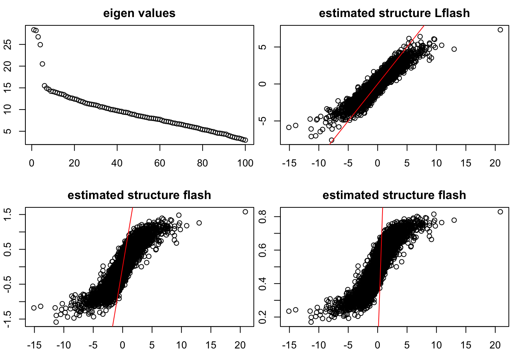
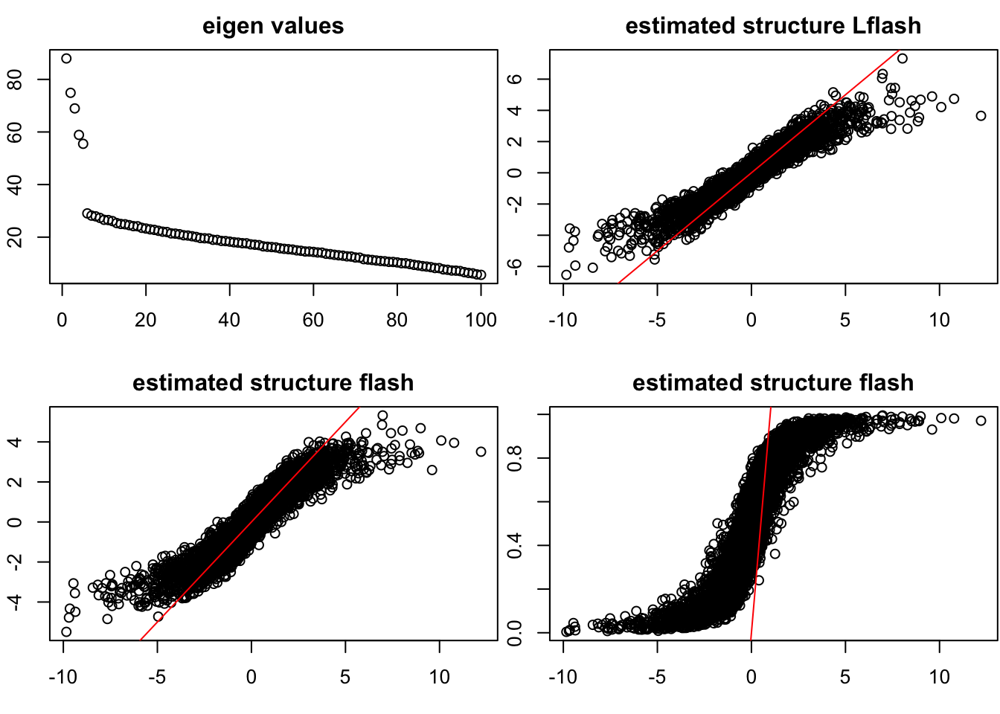
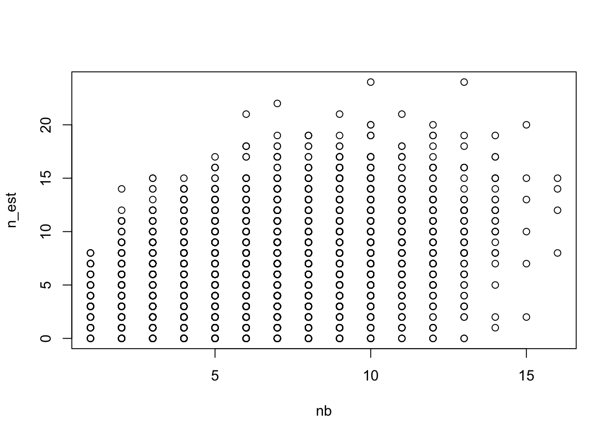

Last updated: 2017-03-16
Code version: f221793
Here we allow that \((\sigma_{1}^f)^2 = 0\) and \((\sigma_{1}^l)^2=0\), which means we include the point mass into the prior for each component for \(f\) and \(l\).
Inspired by David and following the technique in P`olya-Gamma augmentations for factor models, we have that
\[\begin{eqnarray} P(Y_{ij,\omega_{ij}}|Z_{ij}) = C^2_{(Y_{ij} +1)} 2^{-2}e^{Y_{ij}Z_{ij}}e^{-\omega_{ij}Z_{ij}^2 / 2}PG(\omega_{ij}|2,0) \end{eqnarray}\]where \(C^2_{(Y_{ij} +1)} = \frac{2!}{(1 - Y_{ij})!(Y_{ij} +1)!}\) and \(PG(\omega_{ij}|2,0)\) is Polya-Gamma distribution.
where \(\xi_{ij} = \sqrt{E_ql_i^2 E_q f_j^2}\)
where \[\tau(\xi_{ij}) = \frac{1}{\xi_{ij}}\tanh (\frac{\xi_{ij}}{2})\] This is an ATM problem and we can apply ash to solve that.
Similarly the \(f_j\).
following the same trick in logistic flash, we can extend this algorithm to a greedy algorithm for rank K model. (will add this details later)
source("~/HG/LogisticFlash/Rcode/GD_Bifunctions.R")
Data = datamaker(100,200,
c(0.3,0.2,0.1,0.4),c(0.1,0.5,1,2),1,
c(0.3,0.2,0.2,0.3),c(0.1,0.3,0.6,2),1,
K = 1)
pY_vec = 1/(1+exp(-as.vector(Data$Z)))
Y_vec_012 = sapply(pY_vec,function(x){rbinom(1,2,x)})
Y_vec = ( Y_vec_012 - 1)
# Y_vec = Y_vec_01
Y = matrix(Y_vec,nrow = 100, ncol = 200)
gflash = flashr::greedy(Y,K = 8)[1] 2L_K = list()
F_K = list()
L_K$EL_K = 0
F_K$EF_K = 0
l_int = list()
f_int = list()
l_int$El = gflash$l
l_int$El2 = gflash$l2
f_int$Ef = gflash$f
f_int$Ef2 = gflash$f2
Ltest = L_flash(Y, L_K, F_K, l_int, f_int, maxiter = 200)
sqrt(mean((Data$L_true %*% t(Data$F_true) - Ltest$l %*% t(Ltest$f))^2)) / sqrt(mean((Data$L_true %*% t(Data$F_true) )^2))[1] 0.2571967# rank K version
# try the flash on the original data
Data = datamaker(100,200,
c(0.3,0.2,0.1,0.4),c(0.1,0.5,1,2),0.6,
c(0.3,0.2,0.2,0.3),c(0.1,0.3,0.6,2),0.6,
K = 5)
pY_vec = 1/(1+exp(-as.vector(Data$Z)))
Y_vec_012 = sapply(pY_vec,function(x){rbinom(1,2,x)})
Y_vec = ( Y_vec_012 - 1)
# Y_vec = Y_vec_01
Y = matrix(Y_vec,nrow = 100, ncol = 200)
gflash = flashr::greedy(Y,K = 8)[1] 2
[1] 3
[1] 4
[1] 5
[1] 6Ltest = GL_flash(Y,K = 8)[1] 2
[1] 3
[1] 4
[1] 5
[1] "stop here due to no signal"sqrt(mean((Data$L_true %*% t(Data$F_true) - Ltest$l %*% t(Ltest$f))^2)) / sqrt(mean((Data$L_true %*% t(Data$F_true) )^2))[1] 0.4377342sqrt(mean((Data$L_true %*% t(Data$F_true) - gflash$l %*% t(gflash$f))^2)) / sqrt(mean((Data$L_true %*% t(Data$F_true) )^2))[1] 0.7893618par(mfrow = c(2,2),mar = c(5,4,4,2) - 1.9)
plot(svd(Y)$d,main = "eigen values")
plot(as.vector(Data$L_true %*% t(Data$F_true)),as.vector(Ltest$l %*% t(Ltest$f)),main = "estimated structure Lflash")
abline(0,1,col = "red")
plot(as.vector(Data$L_true %*% t(Data$F_true)),as.vector(gflash$l %*% t(gflash$f)),main = "estimated structure flash")
abline(0,1,col = "red")
library(boot)
plot(as.vector(Data$L_true %*% t(Data$F_true)),inv.logit(as.vector(gflash$l %*% t(gflash$f))),main = "estimated structure flash")
abline(0,1,col = "red")
Here we allow that \((\sigma_{1}^f)^2 = 0\) and \((\sigma_{1}^l)^2=0\), which means we include the point mass into the prior for each component for \(f\) and \(l\).
Inspired by David and following the technique in P`olya-Gamma augmentations for factor models, we have that
\[\begin{eqnarray} P(Y_{ij,\omega_{ij}}|Z_{ij}) = C^{n_{ij}}_{(Y_{ij} + \frac{n_{ij}}{2})} 2^{-2}e^{Y_{ij}Z_{ij}}e^{-\omega_{ij}Z_{ij}^2 / 2}PG(\omega_{ij}|n_{ij},0) \end{eqnarray}\]where \(C^{n_{ij}}_{(Y_{ij} + \frac{n_{ij}}{2})} = \frac{n_{ij}!}{(\frac{n_{ij}}{2} - Y_{ij})!(Y_{ij} +\frac{n_{ij}}{2})!}\) and \(PG(\omega_{ij}|n_{ij},0)\) is Polya-Gamma distribution.
where \(\xi_{ij} = \sqrt{E_ql_i^2 E_q f_j^2}\)
where \[\tau(\xi_{ij}) = \frac{n_{ij}}{ 2 \xi_{ij}}\tanh (\frac{\xi_{ij}}{2})\] This is an ATM problem and we can apply ash to solve that.
Similarly the \(f_j\).
following the same trick in logistic flash, we can extend this algorithm to a greedy algorithm for rank K model. (will add this details later)
source("~/HG/LogisticFlash/Rcode/GD_NBfunctions.R")
Data = datamaker(100,200,
c(0.3,0.2,0.1,0.4),c(0.1,0.5,1,2),1,
c(0.3,0.2,0.2,0.3),c(0.1,0.3,0.6,2),1,
K = 1)
pY_vec = 1/(1+exp(-as.vector(Data$Z)))
nb = rpois(100*200,5)+1
Y_vec_count = sapply(seq(1,length(pY_vec)),function(x){rbinom(1,nb[x],pY_vec[x])})
Y_vec = ( Y_vec_count - nb/2)
Y = matrix(Y_vec,nrow = 100, ncol = 200)
NB = matrix(nb,nrow = 100, ncol = 200)
gflash = flashr::greedy(Y,K = 8)[1] 2L_K = list()
F_K = list()
L_K$EL_K = 0
F_K$EF_K = 0
l_int = list()
f_int = list()
l_int$El = gflash$l
l_int$El2 = gflash$l2
f_int$Ef = gflash$f
f_int$Ef2 = gflash$f2
Ltest = L_flash(NB,Y, L_K, F_K, l_int, f_int, maxiter = 200)
sqrt(mean((Data$L_true %*% t(Data$F_true) - Ltest$l %*% t(Ltest$f))^2)) / sqrt(mean((Data$L_true %*% t(Data$F_true) )^2))[1] 0.1687944sqrt(mean((Data$L_true %*% t(Data$F_true) - gflash$l %*% t(gflash$f))^2)) / sqrt(mean((Data$L_true %*% t(Data$F_true) )^2))[1] 0.3880428# rank K version
# try the flash on the original data
Data = datamaker(100,200,
c(0.3,0.2,0.1,0.4),c(0.1,0.5,1,2),0.6,
c(0.3,0.2,0.2,0.3),c(0.1,0.3,0.6,2),0.6,
K = 5)
pY_vec = 1/(1+exp(-as.vector(Data$Z)))
nb = rpois(100*200,5)+1
Y_vec_count = sapply(seq(1,length(pY_vec)),function(x){rbinom(1,nb[x],pY_vec[x])})
Y_vec = ( Y_vec_count - nb/2)
Y = matrix(Y_vec,nrow = 100, ncol = 200)
NB = matrix(nb,nrow = 100, ncol = 200)
gflash = flashr::greedy(Y,K = 8)[1] 2
[1] 3
[1] 4
[1] 5
[1] 6Ltest = GL_flash(NB,Y,K = 8)[1] 2
[1] 3
[1] 4
[1] 5
[1] "stop here due to no signal"sqrt(mean((Data$L_true %*% t(Data$F_true) - Ltest$l %*% t(Ltest$f))^2)) / sqrt(mean((Data$L_true %*% t(Data$F_true) )^2))[1] 0.3826516sqrt(mean((Data$L_true %*% t(Data$F_true) - gflash$l %*% t(gflash$f))^2)) / sqrt(mean((Data$L_true %*% t(Data$F_true) )^2))[1] 0.4283638par(mfrow = c(2,2),mar = c(5,4,4,2) - 1.9)
plot(svd(Y)$d,main = "eigen values")
plot(as.vector(Data$L_true %*% t(Data$F_true)),as.vector(Ltest$l %*% t(Ltest$f)),main = "estimated structure Lflash")
abline(0,1,col = "red")
plot(as.vector(Data$L_true %*% t(Data$F_true)),as.vector(gflash$l %*% t(gflash$f)),main = "estimated structure flash")
abline(0,1,col = "red")
library(boot)
plot(as.vector(Data$L_true %*% t(Data$F_true)),inv.logit(as.vector(gflash$l %*% t(gflash$f))),main = "estimated structure flash")
abline(0,1,col = "red")
library(ashr)
p_est = boot::inv.logit(as.vector(as.vector(Ltest$l %*% t(Ltest$f))))
x = Y_vec_count
ash.pois.out = ashr::ash(rep(0,length(x)),1,lik=lik_pois(x,scale=p_est))
mean(ash.pois.out$result$PosteriorMean)[1] 5.982071n_est = rpois(length(x),(mean(ash.pois.out$result$PosteriorMean))* p_est) + Y_vec_count
plot(nb,n_est)
sessionInfo()R version 3.3.0 (2016-05-03)
Platform: x86_64-apple-darwin13.4.0 (64-bit)
Running under: OS X 10.12.3 (unknown)
locale:
[1] en_US.UTF-8/en_US.UTF-8/en_US.UTF-8/C/en_US.UTF-8/en_US.UTF-8
attached base packages:
[1] stats graphics grDevices utils datasets methods base
other attached packages:
[1] workflowr_0.4.0 rmarkdown_1.3 boot_1.3-18 MASS_7.3-45
[5] ashr_2.1-7 devtools_1.12.0
loaded via a namespace (and not attached):
[1] Rcpp_0.12.9 knitr_1.15.1 magrittr_1.5
[4] REBayes_0.73 doParallel_1.0.10 pscl_1.4.9
[7] lattice_0.20-34 SQUAREM_2016.8-2 R6_2.2.0
[10] foreach_1.4.3 flashr_0.1.1 stringr_1.2.0
[13] httr_1.2.1 tools_3.3.0 grid_3.3.0
[16] parallel_3.3.0 irlba_2.1.2 git2r_0.18.0
[19] withr_1.0.2 htmltools_0.3.5 iterators_1.0.8
[22] assertthat_0.1 yaml_2.1.14 rprojroot_1.2
[25] digest_0.6.12 Matrix_1.2-8 codetools_0.2-15
[28] curl_2.3 memoise_1.0.0 evaluate_0.10
[31] stringi_1.1.2 Rmosek_7.1.2 backports_1.0.5
[34] truncnorm_1.0-7 This R Markdown site was created with workflowr